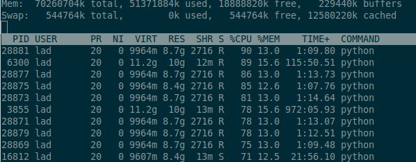

I mainly work in Python which has the wonderful tools IPython Notebook
and IPython QT console, both supporting interactive python and inline
matplotlib plots. Notebook has the benefit of cell execution and I use it
when iteratively analysing a dataset and QT console when developing the
infrastructure to later on use in the analysis. This post will talk about the
analysis in IPython Notebook.
Often when doing quick and dirty data analysis we're able to work locally on our laptops
but sometimes that dataset is to large or the computation to heavy. Moving away from
the normal tools and libraries that we're used to and work on distributed frameworks can be
cumbersome. Luckily we can host a Notebook on a Amazon EC2 instance and leave the computation
over night or use a offering with more RAM or CPU than we have locally.
When working on my master thesis I used one of the bigger offerings from Amazon with 70GB RAM and
8 cores, allowing me to run multiple tests in parallel by different notebooks.

These steps are really simple. On the Amazon instance, start a IPython Notebook.
ipython notebook port=7777
On the local machine, set up a ssh-tunnel to the EC2 instance on that port.
ssh -N -f -L localhost:7777:localhost:7777 amazon
where amazon is defined in the ssh-config.
Navigate to http://localhost:7777 and you will access the notebook running on the EC2 instance.
tips
To easy pass variables between notebooks use the predefined ipython commande, %store.
Save a variable:
Retrieve a variable:
and to see what variables are currently set, use
There are a couple of things not working properly in Notebook. One of which is that when
closing the connection from the browser, the output of a running execution gets lost. This is
already reported as a bug and apparently hard to fix with the current codebase.
The solutions is to store intermediate results in a file but this of course means messier code.